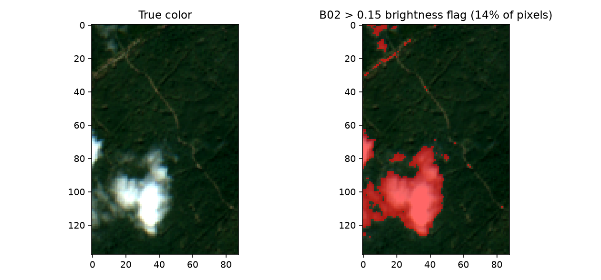

17. Preparing EO Observations
What you will learn
Why real Sentinel-2 reflectance needs rescaling before it matches anything trained on simulated reflectance.
How to line up real band names/order with a trained model’s expected predictor columns.
Why cloud masking is harder than it looks – and a real, verified demonstration of a naive approach failing.
Concept
The cube retrieved in 16. Retrieving Real EO Data isn’t ready for an inversion model yet: its reflectance is integer-scaled, its bands may not be named/ordered the way the model expects, and some pixels are cloud-contaminated. All three need fixing before prediction.
Python tools used
No new package functions here – this chapter is plain NumPy/xarray manipulation of the cube from Chapter 16, since the “preparation” step is inherently about matching your own trained model’s expectations, not a one-size-fits-all library call.
Run the example
import numpy as np
real_names = ["B02", "B03", "B04", "B05", "B06", "B07", "B08", "B8A", "B11", "B12"]
# 1. Reflectance scaling: Sentinel-2 L2A stores reflectance x10000 (integer storage)
r = {b: cube[b].values.astype(float) / 10000 for b in real_names}
print("B04 raw range:", cube["B04"].values.min(), cube["B04"].values.max())
print("B04 scaled range:", r["B04"].min(), r["B04"].max())
# 2. Band naming/order: match the exact column order the trained model expects
# (e.g. t13-machine-learning-inversion's band_cols, built the same way)
pix = np.column_stack([r[b].ravel() for b in real_names])
print("Pixel array shape:", pix.shape) # (n_pixels, n_bands)
# 3. A simple brightness-based cloud flag -- vegetation blue reflectance is
# usually low (<0.1); clouds are bright across every band.
cloud_like = r["B02"] > 0.15
print("Flagged fraction:", cloud_like.mean())
Result
Printed output (from the real cube retrieved in Chapter 16):
B04 raw range: 1204.6666 3073.0
B04 scaled range: 0.12046666259765625 0.3073
Pixel array shape: (12144, 10)
Flagged fraction: 0.14443346508563897
{kind=link}

Real output: the true-color image (left, with a visible bright cloud) and the same scene with pixels where B02 > 0.15 highlighted (right) – the simple brightness heuristic catches the real cloud well, but also flags some of the bright unpaved forest track, a real false-positive worth knowing about, not hidden here.
Interpretation
The scene’s own bundled SCL (Scene Classification Layer, Sentinel-2’s
own per-pixel cloud/shadow/vegetation classification) is included in the
cube, but is not usable directly here: get_sentinel2_cube()
was called with aggregation_method="mean", which averages SCL’s
categorical class codes across the whole date range the same way it
averages continuous reflectance – producing meaningless fractional
values (e.g. 5.6) instead of a real class label. This is a genuine,
verified limitation, not a hypothetical warning: proper cloud masking
needs either a different (non-mean) aggregation for SCL
specifically, or per-date masking before compositing – not something
this chapter’s simple call does for you. The brightness-based fallback
used above is a reasonable, honest substitute for a quick composite like
this one, but it’s a heuristic, not a substitute for real per-pixel
classification.
Try it yourself
Raise the
B02threshold from 0.15 to 0.20 and see how much less of the forest track gets falsely flagged, at the cost of possibly missing thinner cloud edges.Check whether every band’s minimum value across the whole scene is higher than you’d expect for a “clear” composite (the code above already shows
B02’s overall minimum is 0.124, not near-zero) – evidence thataggregation_method="mean"can leave residual contamination everywhere, not just in obviously cloudy pixels.Combine the brightness flag with a simple NDVI threshold (very low NDVI can also indicate cloud/shadow/water) for a slightly more robust combined mask.
Common mistakes
Forgetting the /10000 rescale is the single most common way to feed a model garbage – raw Sentinel-2 L2A values (hundreds to thousands) are nowhere near the [0,1] range anything trained on simulated reflectance expects.
Assuming
SCLis directly usable after a"mean"composite – verified above to produce meaningless fractional class codes, not real classifications.A pixel-wise valid-range check (
0 < reflectance < 1) does not catch clouds – bright clouds are still valid, finite reflectance values, just physically the wrong signal. The brightness heuristic above is a real, if imperfect, improvement.
Next
18. Applying an Inversion Model Spatially – running a trained inversion model over this prepared pixel array.